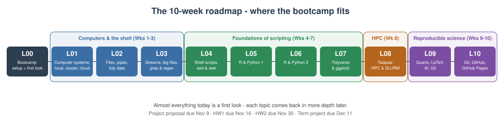
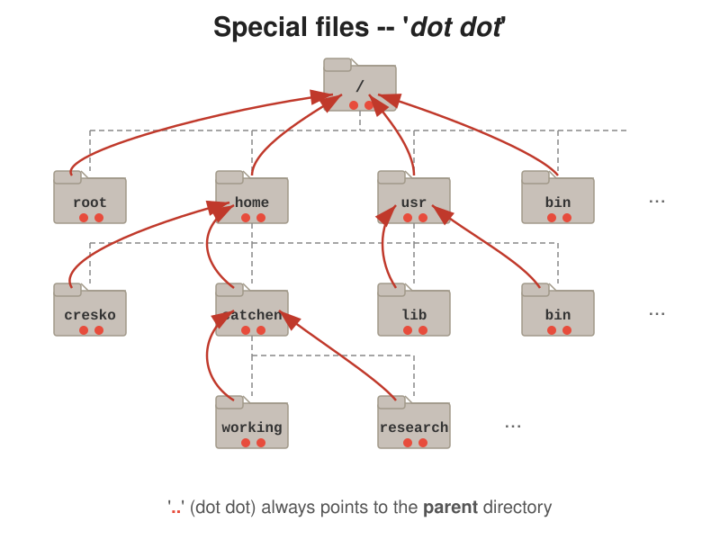
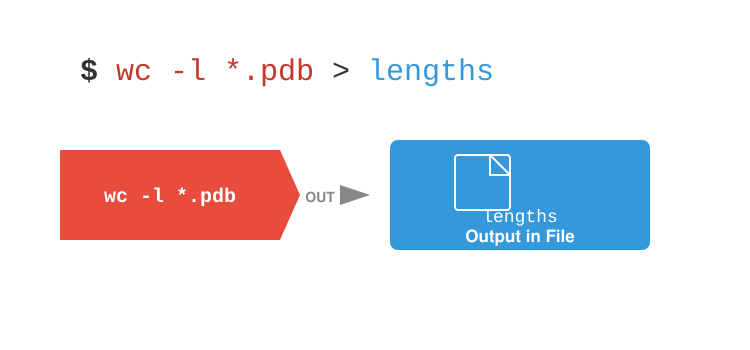
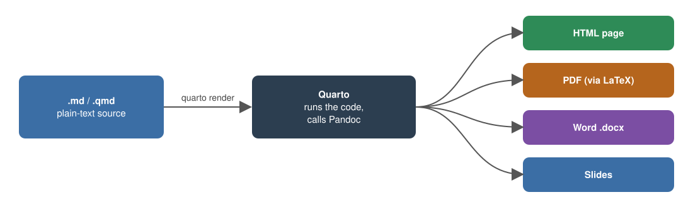

[1] 4Lecture 00 - Computational Tools Bootcamp
Getting Started: UO Computing, the Shell, Your Toolkit, and Markdown
Bill Cresko
2026-09-24
Book reading for this lecture
The course book goes deeper on everything in this lecture. Read before or after class:
Welcome to the Bootcamp
This is a practical morning - we will learn by doing
- By 1:00pm every one of you should have a working computational toolkit on your own laptop
- You should know where UO keeps your files and software
- You should be able to move around your computer from the command line
- And you should be able to write and render a Markdown document
Note
If you fall behind today, that’s fine. Everything here is in the course book (Chapters 1-5), the slides stay online, and office hours are Friday 11:00-12:00 in the KC2 Computational Suite. Get the installs working; the rest can be re-read.
Class Introductions
Who are you?
- Your name
- Your home lab or rotation lab
- What kind of computer are you using today (Mac, Windows, Linux)?
- What has your experience with programming been like?
Before we start - is your laptop ready?
- RAM: at least 8 GB (16 GB recommended)
- Free disk space: at least 20 GB - we’ll install several GB of software today
- Operating system: an up-to-date macOS, Windows 10/11, or Linux
- Administrator rights to install software (a lab- or department-managed laptop may need IT’s help)
- Chromebooks and iPads won’t work for this course
- Plug in - installs drain batteries
Note
Don’t have a suitable laptop? Talk to me today - we’ll find a solution.
Plan for the morning
| Time | Block | Install along the way |
|---|---|---|
| 9:00 - 9:50 | Part 1 - Why computing? UO’s computational infrastructure; your IDE | Positron; start WSL (Windows) / Xcode tools (Mac) |
| 9:50 - 10:00 | Break | |
| 10:00 - 10:50 | Part 2 - Unix and the shell, in Positron’s terminal | Finish Ubuntu (Windows) |
| 10:50 - 11:00 | Break | |
| 11:00 - 11:50 | Part 3 - Scripting languages: R and Python | R, Python |
| 11:50 - 12:00 | Break | |
| 12:00 - 1:00 | Part 4 - Markdown and rendering with Quarto | (nothing new - Quarto ships with Positron) |
Tip
Installs are spread through the morning so downloads can run while we talk. Work with your neighbors - if you finish early, help someone else!
The course at a glance
By the end of the term you will be able to
- Set up and use a computational toolkit: shell, R, Python, Quarto, Git, and an IDE
- Work at the Unix command line: paths, files, pipes,
grep, and large data files - Write scripts in bash, R and Python, wrangle data frames, and make publication-quality figures
- Run big jobs on UO’s cluster Talapas with Slurm
- Practice reproducible science: Quarto and LaTeX documents, responsible use of AI assistants, Git and GitHub
| Wk | Date | Topic |
|---|---|---|
| 0 | Sep 24 | Bootcamp (today) |
| 1-3 | Sep 28 - Oct 12 | Computers and shells |
| 4-7 | Oct 19 - Nov 9 | Foundations of scripting: bash, R, Python, tidyverse and ggplot2 |
| 8 | Nov 16 | High performance computing on Talapas |
| 9-10 | Nov 23 - 30 | Reproducible science: Quarto, LaTeX, AI, Git and GitHub |
| - | Dec 11 | Term project due |
Two problem sets, each assigned two weeks before it is due (HW1 due Nov 16, HW2 due Nov 30), and a term project on Talapas (one-page proposal due Nov 9; project due Dec 11). Full details on the Schedule and Syllabus pages.
Where the bootcamp fits - the 10-week roadmap

Why computational literacy matters
- Modern bioengineering generates data at scale: imaging, sequencing, simulations, sensors, device logs
- The lab generates the data; the computer turns it into results
- Every analytical decision - filtering, normalizing, plotting, testing - is a line of code
- Reproducibility requires that every step is recorded, versioned, and re-runnable
Tip
You do not need to become a software engineer. You need to know your tools well enough to use them confidently and understand what they are doing.
The computational stack for this course
- Hardware - your laptop now; UO’s HPC cluster Talapas later in the term
- Operating system - macOS, Linux, or Windows (with WSL) - all speaking the same Unix shell
- Command line - navigate, move data, run scripts, chain tools together
- Languages - R and Python for analysis
- IDEs - VS Code, Positron (and RStudio) to write and run code
- Markdown / Quarto / LaTeX - prose + code + math + figures in one reproducible document
- Institutional services - Microsoft 365, Dropbox, site-licensed software
Part 1 - Why Computing? Why Scripting?
Why script instead of point-and-click?
- Reproducibility - a script is an exact, re-runnable record of what you did (your lab notebook for data)
- Scale - the same command works on 1 file or 10,000 files
- Automation - rerun the whole analysis when new data arrive, with one command
- Fewer errors - no mis-clicks, no copy-paste slips, no forgotten steps
- Sharing - collaborators, reviewers, and future-you can see and rerun every step
- Access - many scientific tools only run from the command line, and clusters like Talapas have no mouse
Tip
Imagine renaming 500 microscope images, or re-making 12 figures after a reviewer asks for a different normalization. By hand: an afternoon. With a script: seconds.
A cautionary tale: Excel changed the genes
- Spreadsheets “helpfully” auto-convert text: gene SEPT2 becomes the date 2-Sep, MARCH1 becomes 1-Mar
- A 2016 survey found gene-name errors in the supplementary Excel files of about 1 in 5 genomics papers that shared gene lists (Ziemann, Eren & El-Osta, Genome Biology)
- The problem was so persistent that in 2020 the official gene nomenclature committee renamed the genes (SEPT2 → SEPTIN2, MARCH1 → MARCHF1)
Important
The lessons: keep raw data in plain-text files (CSV/TSV), never “fix” data by hand in a spreadsheet, and let scripts do the transformations so every step is recorded. Much more on tidy data in Lecture 02.
A taste of scripting (just watch - you’ll write these later!)
Shell (Lecture 04) - rename 500 images at once
Count the lines in every data file:
Note
Different languages, same idea: describe the task once, let the computer repeat it.
Languages you’ll meet as a bioengineer
| Language | What it’s great for | In this course |
|---|---|---|
| Bash (the shell) | Moving and inspecting files, running programs, gluing tools together, clusters | Lectures 01 - 04, 08 |
| R | Statistics, data wrangling, publication-quality figures, Bioconductor genomics | Lectures 05-07 (and BioE stats) |
| Python | General programming, image analysis, machine learning, instrument control | Lectures 05-07, side by side with R |
| MATLAB | Signal processing, modeling, many engineering labs (UO site license) | - |
| Markdown / LaTeX | Writing documents, reports, slides, and equations | Today and Lecture 09 |
Tip
Learn one well, and the next is much easier. The concepts - variables, loops, functions, files - transfer between languages. And like a spoken language: use it or lose it!
UO’s Computational Infrastructure
The three parts of a computer that matter most
- CPU - does the processing
- Made of cores (independent workers) running at some clock speed (GHz)
- More cores = more tasks at once (if the software is written to use them)
- RAM - fast, volatile working memory. Your data must fit here while you analyze it. Lost when power is off.
- Disk - slower, persistent storage (SSD or hard drive). Where your files live.
Tip
The most common bottleneck for data analysis is RAM. “Out of memory” usually means get more RAM or move to the cluster, not “get a faster CPU.” More on this in Lecture 01.
Where can computation happen?

Your laptop or lab workstation: fast to start, fully under your control - but limited RAM, storage, and uptime.

Many computers (nodes) working together, shared by many users through a scheduler - this is Talapas.

Rented computing (AWS, Azure, Google Cloud): scales up on demand, pay by the hour.
Note
Much more in Lecture 01 (local, cluster, cloud) and Lecture 08 (Talapas).
Your laptop vs. Talapas - the short version
| Typical laptop | One Talapas node | All of Talapas | |
|---|---|---|---|
| CPU cores | 8 - 12 | 128 | 14,500+ |
| RAM | 8 - 16 GB | 512 GB (up to 4 TB) | ~129 TB |
| Storage | 0.5 - 1 TB | shared | ~3 PB |
- One node has roughly 30x the RAM and 10x the cores of your laptop - and Talapas has hundreds of nodes, plus 89 GPUs
- When an analysis says “out of memory” or would take days on your laptop - that’s a job for Talapas (Week 8)
- Full specs and the storage you get (250 GB home, 2 TB lab project space) are in the book, Chapter 3
Research Advanced Computing Services (RACS)
RACS runs Talapas and helps UO researchers with computing of all kinds - https://racs.uoregon.edu
- Talapas HPC cluster - CPU, GPU, and large-memory nodes, 225+ scientific software packages
- Research data storage - large-scale storage (about $35/TB/year) beyond what Talapas includes
- Globus - fast, reliable transfer of very large datasets (e.g. from a sequencing core or collaborator)
- Consulting - software installs, optimizing code, data security, choosing hardware
- Grant support - help writing the computing and data-management parts of proposals
- Beyond UO - access to national supercomputers (NSF ACCESS) and cloud (AWS, Azure) consulting
Tip
Contact: racs@uoregon.edu or the RACS service desk. They are there to help - ask early!
Getting on Talapas - and Open OnDemand
Getting an account
- Every Talapas user belongs to at least one PIRG (Principal Investigator Research Group) - your PI is responsible for it
- Ask your PI (or rotation PI) to add you - setup can take a few days, so do it early. The request form is at https://racs.uoregon.edu/request-access
- For this course, we’ll arrange class access through CBDS before Lecture 08
- Documentation: Talapas Knowledge Base
Open OnDemand - Talapas in your web browser
- Go to https://ondemand.talapas.uoregon.edu and log in with your Duck ID (Chrome or Firefox; a private window avoids login glitches)
- Jupyter Lab notebooks running on Talapas
- A full remote desktop with RStudio Server, MATLAB, and Stata
- A shell in the browser
- A file explorer - drag-and-drop files between your laptop and Talapas
- A job composer for submitting jobs
Note
OnDemand apps run as jobs on compute nodes - they keep running even if you close your browser, so remember to end sessions you no longer need. Command-line access (SSH) and job scheduling come in Lecture 08.
Your UO digital identity
- Duck ID - your UO username and password; it is the key to almost everything today
- Manage it at https://duckid.uoregon.edu
- Two-step login (Duo) - required for most UO services; set it up on your phone before you need it
- UO email (
you@uoregon.edu) - also your sign-in name for Microsoft 365 and Dropbox - UO VPN (Cisco Secure Client) - only needed off-campus for campus-restricted resources (some library databases, departmental file shares, some licensed software)
- Download from https://uovpn.uoregon.edu
Note
Most UO services - email, Canvas, Microsoft 365, Teams, Zoom - work from anywhere without the VPN.
Where to get help at UO
- UO Service Portal - https://service.uoregon.edu - knowledge base and help tickets for everything in this section
- Technology Service Desk - phone 541-346-4357 or live chat
- UO Libraries Data Services - https://library.uoregon.edu/data-services
- Free workshops on R, Python, data analysis, and more
- One-on-one consultations (in person or Zoom): statistics, R, Python, version control, data management plans
- Drop-in help desk in Knight Library, Monday - Friday, 11am - 4pm
- RACS - Talapas and research computing - racs@uoregon.edu
- CBDS - the Center for Biomedical Data Science at the Knight Campus: data-science workshops and consulting for Knight Campus researchers - ask me
Tip
When something doesn’t work, search the Service Portal knowledge base first - most questions already have an article.
How to ask for help (and get a fast answer)
- Say what you were trying to do - “I’m trying to install R on my M2 Mac”
- Copy the exact error message - as text, not a blurry photo (a screenshot is OK if you can’t copy it)
- Show the command or code you ran, and what you expected to happen
- Say what you’ve already tried - restarted? searched the error? checked the path with
pwd? - Include your system - macOS/Windows/Ubuntu, chip type
- For code problems, make a minimal example - the smallest piece of code that still shows the problem
Tip
Half the time, writing a good question makes you solve it yourself. The other half, it lets someone else answer in one reply.
Where your files live at UO
Every UO student and employee has a Microsoft 365 A5 license (sign in at https://office.uoregon.edu with your UO email):
- OneDrive - 1 TB for everyone. The sync app puts a
OneDrivefolder on your laptop; approved for FERPA and HIPAA data. It belongs to you - lab data should live in shared storage so it doesn’t leave when you do - Teams / SharePoint - group-owned files and chat for labs; Outlook (100 GB mailbox); Word, Excel, PowerPoint on your own devices
- Copilot Chat - a UO-protected generative AI assistant when signed in with your UO account
- UO Dropbox (2 TB) - faculty, staff and graduate employees (GEs) only; students who aren’t UO employees lost access in March 2026. Approved for green/amber data (incl. FERPA), not HIPAA. Your lab may share a Dropbox team folder with you
Tip
Synced folders (OneDrive, Dropbox) are great for documents. Large or rapidly-changing analysis files are better on local disk or Talapas - and a synced folder is not a backup (next slides). Details: Chapter 3.
Data classification - and protecting research data
UO classifies data by risk. Know the class of your data before you choose where to put it.
| Class | Examples | OK in |
|---|---|---|
| Green (low) | Published data, your code, most de-identified research data | Almost anywhere, including AI tools |
| Amber (medium) | FERPA student records, unpublished research data | OneDrive, Dropbox, Teams/SharePoint |
| Red (high) | HIPAA / protected health information, IRB human-subjects data, SSNs | Only approved systems (e.g., OneDrive for HIPAA; not Dropbox) - ask first! |
- De-identify data as early as possible; keep the linking key separately and securely
- Encrypt your laptop (FileVault on Mac, BitLocker on Windows) and use a screen lock
- Never put red data on personal cloud accounts, in email attachments, or in AI tools UO doesn’t support; only green data may go into unsupported AI tools
- Unpublished data and code are valuable - don’t post them publicly until your PI agrees
Important
When in doubt, ask before you store or share - your PI, the IRB, or the UO Service Portal. It is much easier than fixing a data breach.
Back up your work: the 3-2-1 rule
3 copies of anything important
2 different kinds of storage
1 copy off-site (i.e., in the cloud)
For example:
- Your laptop (working copy)
- An external drive with Time Machine (Mac) or File History (Windows)
- OneDrive or your lab’s Dropbox/server (off-site)
- Code on GitHub (Lectures 09 - 10) - every commit is a backup
Warning
A synced folder is not a backup by itself - if you delete or overwrite a file, the change syncs everywhere. Keep versioned backups, and test that you can restore a file before you need to. Every year, someone loses a thesis chapter to a dead laptop or a stolen backpack.
Choosing where to store your work
| Storage | Best for | Revisited |
|---|---|---|
| Your laptop’s disk | Active work - fast, but not backed up by itself | Lec 01 |
| OneDrive | Personal documents, drafts, backups | - |
| Dropbox (if eligible) | Lab-shared folders, collaboration | - |
| Teams / SharePoint | Group-owned documents | - |
| GitHub | Code and small text files, with full version history | Lec 09-10 |
| Talapas | Large datasets and heavy computation | Lec 08 |
Tip
Rule of thumb: code → GitHub, documents → OneDrive/Dropbox, big data → Talapas. And always keep your raw data somewhere backed up and untouched.
Generative AI at UO
- Microsoft Copilot Chat - sign in with your UO account for a UO-protected AI assistant (https://copilot.microsoft.com)
- UO-supported AI tools are approved for specific data classifications; unsupported tools are approved for green (low-risk) data only - see UO’s AI Service Offerings
- Course policy (see the Policies page): you may use AI to help you learn, debug, and get suggestions - but the work you submit must be your own
- AI assistants are great at explaining error messages and suggesting code - and confidently wrong surprisingly often. Always read, run, and understand the code
Note
We’ll look at AI coding assistants (“vibe coding”) in depth in Lecture 09.
IDE Tools - Positron (install now)
What is an IDE?
- An Integrated Development Environment bundles an editor, a terminal, a console, and tools like version control in one window
- Plain text editors (
nano,vim) are fine for quick edits but don’t scale to real projects - A good IDE:
- shows your whole project at once
- color-codes your code (syntax highlighting) and catches mistakes early
- lets you run code right where you write it
- You’ll spend hours in your IDE - a small upfront investment pays back every day
The minimum viable toolkit - install these today
| Install today | Why |
|---|---|
| Positron (now) | The IDE we use in class - its built-in terminal is where we do Part 2; Quarto is bundled |
| A Unix shell (Part 2) | Built in on macOS/Linux; WSL + Ubuntu on Windows |
| R and Python (Part 3) | The two languages we script in; Positron finds them when you restart it |
| Install later, when we need it | When |
|---|---|
| TinyTeX (small LaTeX, for PDFs) | Week 9 - Quarto, LaTeX and PDF output |
| Git + a GitHub account | Weeks 9-10 (Macs already have Git from the Xcode tools) |
| VS Code, RStudio | Optional alternatives to Positron - any time you like |
Important
In class I will demo Positron. Everything also works in VS Code (same editor underneath) and, for R, in RStudio - use them if you prefer, but if you are new to all of this, follow along in Positron. The Software page has full instructions for every tool.
Installing Positron
- Positron is a free, next-generation data-science IDE from Posit (the makers of RStudio)
- Download from https://positron.posit.co/download
- We install R and Python in Part 3; Positron finds them when you restart it, and lets you switch between them
- Positron includes Quarto and the Quarto extension - nothing extra to install for Markdown and rendering
- Open Positron, then open the terminal with
Ctrl-`(backtick) - that is the shell we use in Part 2 - Later: File → Open Folder on your project, and an R/Python console from the interpreter picker at the top right
Note
If you’ve used RStudio before - it’s still a great R IDE, and we’ll see it alongside Positron in Lecture 05. Positron brings the RStudio-style data-science panes to a VS Code-style editor, for both R and Python.
The Positron layout
- Explorer (file tree for your open folder), editor tabs, an integrated terminal (toggle with
Ctrl-`), and the Command Palette (Cmd/Ctrl-Shift-P- find any command by typing) - Plus data-science panes:
- Console - an interactive R or Python session
- Variables - every object you’ve created
- Plots - your figures, with history
- Data Explorer - a spreadsheet-style view of data frames
- Help - documentation for functions
Tip
Always use File → Open Folder on your whole project, not a single file - the terminal and console then start in that folder. Write code in the editor (so it’s saved in a file) and send lines to the console with Cmd/Ctrl-Enter.
Keyboard shortcuts worth memorizing
| Action | macOS | Windows / Linux |
|---|---|---|
| Command Palette | Cmd-Shift-P |
Ctrl-Shift-P |
| Toggle terminal | Ctrl-` |
Ctrl-` |
| Send line to console | Cmd-Enter |
Ctrl-Enter |
| Toggle comment | Cmd-/ |
Ctrl-/ |
| Indent / un-indent | Cmd-] / Cmd-[ |
Ctrl-] / Ctrl-[ |
| Find in file | Cmd-F |
Ctrl-F |
| Search whole project | Cmd-Shift-F |
Ctrl-Shift-F |
| Save | Cmd-S |
Ctrl-S |
Tip
The backtick (`) is usually on the key above Tab - not the apostrophe. These shortcuts are identical in Positron and VS Code.
Positron vs. VS Code (and RStudio) - which should I use?
The same: Positron is built on Code OSS, the open-source core of VS Code - same editor, Command Palette, terminal, shortcuts and settings; both free, cross-platform, extensible, render Quarto, and connect over SSH.
Different: Positron is built for data science - R and Python built in, with Console, Variables, Plots and Data Explorer panes. VS Code is general-purpose with the biggest extension library. RStudio is Posit’s classic R-only IDE.
| If you mostly… | Try |
|---|---|
| Analyze data interactively in R or Python | Positron |
| Shell scripts, config files, many languages | VS Code |
| Work on remote servers like Talapas | Either |
| Already love RStudio for pure R work | RStudio is fine too! |
Tip
Class demos use Positron. Learn one and you mostly know the other; the book compares all three in Chapter 2.
AI assistants inside your editor
- GitHub Copilot in VS Code - suggests code as you type and answers questions in a chat panel (free for verified students through the GitHub Student Developer Pack)
- Positron Assistant - an AI chat built into Positron that can see your console, variables, and plots
- Both are useful for explaining errors, writing boilerplate, and learning unfamiliar syntax
- Both can be confidently wrong - read and test everything, and never paste sensitive data
- Follow the course AI policy and UO’s data-classification rules
Note
We’ll try these (carefully!) in Lecture 09 - no need to set them up today.
Checkpoint - Positron is ready
Two minutes, everyone, before the break:
- Open Positron
- Open the terminal: Terminal → New Terminal, or
Ctrl-`(the backtick key, above Tab) - Type these and press Enter after each:
- You should see
helloand a path like/Users/youor/home/you- that terminal is where all of Part 2 happens - Windows users: for now this is PowerShell; after the break you will switch it to Ubuntu (WSL)
- Didn’t work? Raise your hand now, not at 10:00
Start these installs now - they run over the break
Windows users - start WSL now
- Right-click Windows PowerShell → Run as administrator
- Type
wsl --installand press Enter - When it finishes, restart your computer over the break
We finish setting up Ubuntu at the start of Part 2.
BREAK - back at 10:00
Part 2 - Unix and the Shell
What is a shell?
- The shell is a program that takes typed commands and hands them to the operating system
bashandzshare the most common shells (macOS useszshby default; Ubuntu usesbash)- You access the shell through a terminal window
- Why bother when there’s a GUI?
- Scriptable - record every step and re-run it with one command
- Composable - chain small tools into powerful pipelines
- Scalable - handles huge files and thousands of files at once
- Universal - the same commands work on your laptop and on Talapas
Getting a shell - macOS and Linux
You already have one!
- In Positron: Terminal → New Terminal, or
Ctrl-`(backtick) - this is what we will use all morning - macOS also has Applications → Utilities → Terminal; Linux has a Terminal app (often
Ctrl-Alt-T) - same shell, different window - Optional: a nicer standalone terminal such as iTerm2 (macOS)
Tip
Mac users: if the xcode-select --install you started a moment ago is still running, let it finish - you can use Terminal in the meantime.
Getting a shell - Windows (finish setting up WSL + Ubuntu)
Tip
Once Ubuntu is installed, Positron’s terminal can open it directly: click the ▾ next to the + in the terminal panel and choose Ubuntu (WSL).
You started this before the break. If you haven’t yet:
- Right-click Windows PowerShell → Run as administrator, type
wsl --install, and restart
Then:
- Open Ubuntu from the Start menu; wait while it finishes installing
- Create a Linux username and password (they do not need to match your Windows login - but remember them!)
- When you type your password, nothing appears on screen - that’s normal; just type it and press Enter
Note
wsl --install installs Ubuntu by default. Requires Windows 11 or an up-to-date Windows 10.
Windows - after Ubuntu is installed
- Your Linux home is
/home/yourname- work here for speed - Your Windows drive is visible from Ubuntu at
/mnt/c/- e.g.
/mnt/c/Users/yourname/Documents
- e.g.
- From Windows File Explorer, Ubuntu files appear under Linux in the sidebar
- Tip: install Windows Terminal from the Microsoft Store for a nicer terminal with tabs
Windows: which side am I on?
With WSL you have two operating systems on one computer - it matters which one you’re typing into.
| Windows side | Ubuntu (WSL) side | |
|---|---|---|
| Terminal | PowerShell / Command Prompt | Ubuntu app, or Positron’s “Ubuntu (WSL)” terminal |
| Prompt looks like | PS C:\Users\you> |
you@laptop:~$ |
| Your home folder | C:\Users\you |
/home/you (~) |
| The other side’s files | \\wsl$\Ubuntu\home\you |
/mnt/c/Users/you |
Unix commands (ls, grep…) |
mostly no | yes |
Tip
In this course: type shell commands in Ubuntu. Install R, Python, and Positron on the Windows side (today). In VS Code, the green WSL: Ubuntu badge (bottom-left) tells you it is connected to Ubuntu.
The file system is a tree

- Files live in a tree of directories (folders) starting at the root,
/ - Your home directory (
~) is your own branch of the tree
Paths - addresses in the tree
- A path is the address of a file or directory
- Absolute path - starts at the root
/, works from anywhere/Users/wcresko/projects/bootcamp/data/samples.csv(macOS)/home/wcresko/projects/bootcamp/data/samples.csv(Linux / WSL)
- Relative path - starts from where you are right now
data/samples.csv../scripts/analysis.R
- Shortcuts:
.= the current directory..= one level up (the parent)~= your home directory

Every file has an address: the chain of directories from the root down to the file
Synced folders have paths too
Dropbox and OneDrive create real folders on your computer - so they have paths you can use from the shell:
- Names like
University of Oregon Dropboxcontain spaces - the next slides show why that is trouble, and how to quote or escape them - Your exact path may differ - find yours with
cd,ls, and Tab completion
Anatomy of a shell command

- Prompt - the shell is ready (often ends in
$or%) - Command - what to do
- Options/flags - change how it does it (e.g.
-l) - Arguments - what to do it to (e.g. a file or directory)
Where am I? What’s here?
pwd # print working directory - the absolute path you're in
ls # list files & folders in the current directory
ls -F # mark directories with /, executables with *
ls -l # long format: permissions, owner, size, date
ls -la # long format + hidden "dot" files (.zshrc, .config ...)
ls -lh # human-readable file sizes (K, M, G)Moving around with cd
cd ~ # go home (~ is always your home directory)
cd # same thing - cd with no argument goes home
cd / # go to the root of the file system
cd ~/Documents # absolute path (via ~) - works from anywhere
cd Documents # relative path - only works if Documents is here
cd .. # up one level
cd ../.. # up two levels
cd - # back to where you just were
pwd # confirm where you landedTip
Press Tab to auto-complete file and directory names. Press it twice to see all the options. This saves typing and typos.
Time-savers and getting help
| Key / command | What it does |
|---|---|
| Tab | Auto-complete a file or directory name (press twice to see options) |
| ↑ / ↓ | Scroll back through commands you’ve already typed |
history |
List your recent commands |
| Ctrl-C | Stop the command that’s running (your emergency exit) |
| Ctrl-A / Ctrl-E | Jump to the start / end of the line |
clear or Ctrl-L |
Clear the screen |
| Copy / paste | macOS: Cmd-C / Cmd-V. Windows & Linux terminals: Ctrl-Shift-C / Ctrl-Shift-V (plain Ctrl-C stops a command!) |
Tip
Getting help: man ls opens the manual page for ls (q quits, /word searches). Many commands also accept --help. And the internet - or a UO-supported AI assistant - is fine for “how do I…?” questions.
Spaces in names are trouble
- The shell uses spaces to separate arguments
- So names with spaces must be quoted or escaped
- Tab completion adds the escapes for you
- Best solution: don’t put spaces in your own file and folder names
Making and managing files and directories
Warning
rm has no Trash. rm -r is permanent and recursive - always double-check the path first.
Looking inside files
Warning
Never cat a huge file - a 3 GB sequence file will flood your terminal. Use head, tail, or less.
Hidden files and the special directories . and ..
- Names that start with a
.are hidden - usually settings files (.zshrc,.bashrc,.gitignore) - Every directory contains two special entries:
.- this directory itself (e.g../myscript.sh= “the script right here”)..- the parent directory, one level up
- So
cd ..isn’t magic - you’re moving into the entry named..

.. always points one level up, so cd ../.. climbs two levels
Wildcards - one command, many files
| Pattern | Matches |
|---|---|
* |
Any number of characters (including none) |
? |
Exactly one character |
[abc] |
Any one of the listed characters |
Warning
The shell expands wildcards before running the command - rm *.csv deletes every CSV instantly. Run ls *.csv first to see what will be affected.
Redirection - send output to a file


> sends it to a file insteadWarning
> silently replaces an existing file. Use >> when you want to add to it.
Pipes - chain commands together

Each command’s output becomes the next command’s input
Tip
This is the Unix philosophy: small tools that each do one thing well, snapped together with |. Build pipelines one step at a time, checking the output as you go.
Practice - paths, redirection and pipes
Paths. You are in /home/you/bootcamp/data:
- Go to
scripts/with an absolute path, then come back with a relative one (cd ../data) - From
data/, listscripts/without moving (ls ../scripts) - From anywhere, go home
Redirection and pipes.
- Sort the numbers numerically (
sort -n) intosorted.txt - Show only the three largest (hint:
sort -n | tail -n 3) - Count the unique numbers (
sort -n | uniq | wc -l) - Append that count to
sorted.txtwith>>, thencatit
Note
Relative paths are portable - move the whole project and they still work. Absolute paths are unambiguous but break if anything above them moves.
Good Habits From Day One
Organizing a project
data/raw/is read-only - always read from it, never write to itoutput/is expendable - it can be regenerated fromscripts/+data/raw/- Use relative paths inside your scripts so the project is portable
Naming conventions that save headaches
- No spaces - use
_or-(cell_counts.csv, notcell counts.csv) - No special characters - avoid
& ? * / \ : ( ) ' " - Be consistent with case - Unix treats
Data.csvanddata.csvas different files - Dates as
YYYY-MM-DDso they sort correctly:2026-09-24_plate_reader.csv - Number scripts to show their order:
01_clean.R,02_analyze.R,03_plot.R - Descriptive, not “final”:
figure2_v3_final_FINAL.pngis a cry for help (and for Git - Lectures 09-10)
Exercise - build a project directory
- Use
touchto makedata/raw/samples.csvandscripts/01_explore.R - Use
pwdin three different directories and write down the absolute paths - From
output/figures, use a relative path to listdata/raw - Find the path to your OneDrive (or Dropbox) folder and
cdinto it
A command-line reference card
| Task | Command |
|---|---|
| Where am I? | pwd |
| What’s here? | ls -lF |
| Go somewhere | cd path |
| Go home / up | cd ~ / cd .. |
| Make a directory | mkdir name |
| Make empty file | touch name |
| Copy | cp src dst |
| Move / rename | mv src dst |
| Delete file | rm file |
| Peek at a file | head / tail / less |
| Count lines | wc -l file |
| Get help | man command |
| Many files at once | *.csv, sample_? |
| Save output | cmd > file / cmd >> file |
| Chain commands | cmd1 \| cmd2 |
Note
Much more in Lectures 01 - 04: streams and error output, working with large files, grep and regular expressions, and writing shell scripts.
BREAK - back at 11:00
Part 3 - Scripting Languages: R and Python
What kind of computer do I have?
Some installers (like R) come in different versions for different processors.
| System | How to check | You’ll see |
|---|---|---|
| macOS | Apple menu → About This Mac | Chip: Apple M1/M2/M3/M4 (Apple silicon) or Processor: Intel |
| Windows | Settings → System → About | Processor, RAM, “64-bit operating system” |
| Any Unix shell | uname -m |
arm64 (Apple silicon/ARM) or x86_64 (Intel/AMD) |
Tip
Write down your chip type - the R installer for macOS comes in two flavors, and you need to pick the right one.
Install R and Python now
Start both downloads now - they can install while we look at how the two languages compare.
R - https://cran.r-project.org
- macOS: the
.pkgthat matches your chip (arm64 for Apple silicon, x86_64 for Intel) - Windows: “base” → download and run the installer, then also install Rtools matching your R version (so packages can compile)
- Accept the defaults
- Once R is installed, in an R console:
install.packages("tidyverse")- it runs in the background (needed from Week 6)
Python - https://www.python.org/downloads/
- macOS: run the python.org installer
- Windows: check “Add python.exe to PATH” on the first screen!
- Ubuntu/WSL: Python is already there; add the extras:
Note
Windows users: install R and Python on the Windows side (where Positron lives). We’ll check that they work on the next slide.
Checkpoint: R and Python
Quit and reopen Positron so it sees the new installs, then open its terminal (Ctrl-`) and run:
- Each should print a version number - not “command not found”
- Didn’t work? Quit and reopen Positron again (a terminal only sees programs installed before it opened)
- Now start an R console and a Python console from the interpreter picker at the top right of Positron
- Still stuck? See the troubleshooting slide in Part 4 - or raise your hand
A preview: Python environments
- Different projects need different package versions - installing everything into one Python eventually breaks something
- An environment is an isolated set of packages for one project:
Note
On Talapas you’ll use conda environments (Lecture 08); uv is a fast modern alternative; R has the same idea in the renv package. Nothing to do today - just know the word “environment”.
R and Python side by side: running code
Both languages work the same way - type into a console to experiment, or save commands in a script and run the whole file.
Tip
In Positron or VS Code, open the script, put the cursor on a line, and press Cmd/Ctrl-Enter to send it to the console - same shortcut for both languages.
R and Python side by side: variables, vectors and a function
stiffness = [12.5, 14.1, 9.8, 11.2] # a list (Python counts from 0)
stiffness[0] # first value
# 12.5
sum(stiffness) / len(stiffness)
# 11.9
def to_mpa(kpa): # define a function - note the : and indentation
return kpa / 1000
[to_mpa(s) for s in stiffness] # apply it to every value
# [0.0125, 0.0141, 0.0098, 0.0112]<-vs=,c()vs[ ], curly braces vs indentation - the ideas are identical- For R-style whole-vector math in Python, use
numpy:np.array(stiffness) / 1000
R and Python side by side: reading a CSV and summarising it
samples.csv has columns sample, treatment, stiffness. Read it and get the mean stiffness per treatment.
- A data frame (R) and a DataFrame (pandas) are the same idea: one row per sample, one column per variable
- R chains steps with the pipe
|>; pandas chains methods with.
R and Python side by side: installing packages
- Genomics packages come from Bioconductor:
BiocManager::install("DESeq2") - Packages install into one shared library;
renvcan pin versions per project
pipinstalls from PyPI;condaalso installs compiled tools (bioconda);uvis a fast newer all-in-one- Always install inside an environment - “which Python did that go into?” is the #1 Python headache
Note
That’s the whole tour for today. Lectures 05-07 go deep on both languages - every example there is shown in R and Python.
BREAK - back at 12:00
Part 4 - Markdown and Rendering with Quarto
Quarto - already installed with Positron
Quarto turns Markdown + code into HTML pages, PDFs, Word documents, and slides - including these slides! Positron ships with the Quarto CLI and extension, so check it works from Positron’s terminal:
Note
PDF output needs LaTeX. We will install TinyTeX (quarto install tinytex, a few minutes) in Week 9, when we cover Quarto and LaTeX in depth. Today we render to HTML only. If you use VS Code or RStudio instead, install Quarto separately from https://quarto.org/docs/get-started/ - RStudio also bundles it.
What is Markdown?
- A lightweight markup language - plain text with a few simple symbols for formatting
- Created to be easy to read as plain text and easy to convert to HTML
- Used everywhere: GitHub READMEs, Jupyter and Quarto notebooks, Slack, lab wikis, websites, these slides
- Plain text means it is future-proof, small, and works perfectly with Git
Note
You write the plain-text source. A program then renders it into a formatted document.
Markdown basics
You type
You get
- Headers of different sizes
- Text that is italic, bold, or
code - Bulleted and numbered lists
- Clickable links and images
- A table:
| Sample | Treatment | Cells |
|---|---|---|
| S1 | control | 5200 |
- A code block - three back-ticks start and end it; add a language name for syntax highlighting
Rendering - from source to document

- Rendering converts your source into a finished document
- One source → many output formats
- PDF output goes through LaTeX - we install TinyTeX for that in Week 9
Exercise - your first Markdown document
- In Positron, File → Open Folder on your
bootcampfolder - Create
docs/hello.mdand type:
- Preview it:
Cmd/Ctrl-Shift-Vopens the Markdown preview - Render it from the terminal:
What is Quarto Markdown (.qmd)?
- A
.qmdfile is Markdown plus:- a YAML header at the top that controls document settings
- code chunks in R, Python, bash, and more that run when you render
- The output - tables, figures, numbers - is woven into the document
- This is literate programming: the document is the analysis
Anatomy of a .qmd file
- YAML header between the
---lines - Markdown prose
- Code chunks marked with
```{r}or```{python}
Exercise - render a Quarto document
- Create
docs/first.qmdwith the content from the previous slide - Render it to HTML:
- Or click Preview in Positron (
Cmd/Ctrl-Shift-K) - Try
quarto render first.qmd --to docx- a Word document from the same source
(PDF output needs LaTeX, which we install in Week 9 - --to pdf will fail today, and that’s expected.)
Note
The R chunk needs R and the Python chunk needs Python. If the Python chunk fails, python3 -m pip install jupyter usually fixes it - Quarto uses Jupyter to run Python.
A taste of LaTeX math in Markdown
Put LaTeX between dollar signs:
Inline: the mean is \(\bar{x} = \frac{1}{n}\sum_{i=1}^{n} x_i\)
\[ \sigma^2 = \frac{1}{n-1}\sum_{i=1}^{n}(x_i - \bar{x})^2 \]
Tip
Much more on Quarto, chunk options, and LaTeX math in Lecture 09.
Jupyter notebooks vs. Quarto documents
Jupyter notebook (.ipynb)
- Cells of code + Markdown, with output saved inside the file
- Very popular for Python, machine learning, image analysis
- Runs in JupyterLab, VS Code, Positron - and on Talapas via Open OnDemand
- Stored as JSON - hard to read and diff in Git
Quarto document (.qmd)
- Plain text - easy to read, edit, and track with Git
- Runs R, Python, Julia, and Bash
- Renders to HTML, PDF, Word, slides, websites
- Output is regenerated every time you render
Tip
You don’t have to choose: Quarto can render Jupyter notebooks too (quarto render notebook.ipynb). This course uses Quarto; many of your labs may use Jupyter. Either way this is literate programming: re-render to re-run everything from raw data to final figure, every figure comes with the code that made it, and your reasoning lives next to your results - an electronic lab notebook for your analyses.
Checkpoint - does everything work?
You checked the shell in Part 1 and R and Python in Part 3. Two more, in Positron’s terminal:
- Both should print versions / a list of passing checks - not “command not found”
- Render
docs/first.qmdone more time and open the HTML it made - Still stuck? The next slide has common fixes
Troubleshooting installs
| Symptom | Likely cause | Try this |
|---|---|---|
command not found |
Program not on your PATH, or terminal opened before install | Close and reopen the terminal (or quit and reopen Positron) |
Windows: python opens the Microsoft Store |
The “app execution alias” is intercepting it | Use py, or reinstall Python with Add to PATH checked |
| “Permission denied” | Need admin rights, or file isn’t executable | Run installer as administrator; on Unix use sudo only when told to |
| Installer fails / “disk full” | Not enough free space | Check with df -h ~; free up at least 20 GB |
| Mac: “cannot be opened because the developer cannot be verified” | Gatekeeper security | Right-click the app → Open, or System Settings → Privacy & Security |
| Download is crawling | 20 people on the same Wi-Fi | Pair up, or finish this one at home tonight |
Tip
Still stuck? Copy the exact error message and raise your hand - see “How to ask for help” from Part 1.
Wrap-up
What to remember from today
- Scripts beat clicks for reproducibility, scale, and fewer errors
- Talapas = hundreds of nodes, each far bigger than your laptop; RACS helps; Open OnDemand gets you in through a browser
- Duck ID + Duo unlock UO services; OneDrive (1 TB) for everyone, Dropbox for faculty/staff/GEs; know your data classification and follow 3-2-1 backups
- Help: Service Portal, Libraries Data Services, RACS, CBDS - and ask good questions; site-licensed software (MATLAB etc.) is at https://software.uoregon.edu
- Paths: absolute (from
/) vs relative (from here);pwd,ls,cd,mkdir,cp,mv,rm; wildcards,>,| - Toolkit: shell, R, Python, Positron (with Quarto built in); TinyTeX, Git and VS Code/RStudio come later
- Markdown is plain text; Quarto renders it (with code!) into HTML, PDF, and more
Before Monday
- Make sure every command on the checkpoint slide works on your laptop
- Practice moving around your file system with
pwd,ls, andcdfor 10 minutes - Create and render one more
.qmddocument about your research - Confirm you can sign in to OneDrive (and Dropbox, if you are a GE) with your UO account
- Set up a backup for your laptop; if you don’t use a reference manager yet, install Zotero (Chapter 3)
- Ask your PI about being added to a Talapas PIRG - the request form is at https://racs.uoregon.edu/request-access
- Bookmark the course Resources page - the online course book (Unix Fundamentals and Reproducible Documents with Quarto) goes deeper on today’s topics
Tip
Stuck on an install? Email me or come to office hours (Friday 11:00 - 12:00, KC2 Computational Suite) before Monday’s class.
Coming up
| Date | Lecture |
|---|---|
| Mon 9/28 | 01 - Course introduction, computer systems, and where computing happens |
| Mon 10/5 | 02 - Unix navigation, files, pipes and tidy data |
| Mon 10/12 | 03 - Data streams, large genomic files, GREP and regular expressions |
Note
Class meets Mondays 4:00 - 5:00pm in KC2 213. Bring your laptop every week!
BioE Computational Tools 2026 - Knight Campus